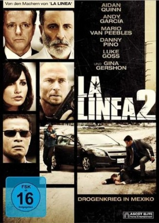

#4509 La Linea 2
Alternativ: Across the Line: The Exodus of Charlie Wright
 
 IMDB-Wertung: 5.3 / 10
IMDB-Wertung: 5.3 / 10  Metascore: 0
Metascore: 0 
10 Milliarden sind verdammt viele Dollar und Charlie Wright hat sie alle vertauensvollen Anlegern aus der Tasche gelogen. Darunter sind auch zwei russische Gangster, die ihre Rücklagen verzockt haben. Nun haben sie großes Interesse an einem persönlichen Gespräch mit dem flüchtigen Finanzbetrüger und schicken ihm ein schwer bewaffnetes Einladungskomitee hinterher.Ebenso gut bewaffnet sind die Männer von Jorge Garza. Der Drogenkönig von Tijuana ist in schweren Geldnöten und hofft auf eine Milliardenspende von Charlie, der sich in Garzas Revier vor dem FBI verkrochen hat. Die Bundesagenten lassen auch nicht lange auf sich warten und eine atemlose Treibjagd beginnt. Die entscheidende Frage ist nicht ob, sondern wer Charlie zuerst erwischt - denken zumindest seine Verfolger ...
Jahr: 2010
Dauer: 94 Minuten
FSK: 16
Land: USA Studio: IFA DistributionTonspuren: DTS - ,
Untertitel: Deutsch,
Auflösung: 1080p (1920x960) Größe: 6717 MB
Genre: Drama, Krimi
Regisseur: R. Ellis Frazier
Drehbuch: Ronald Bass
Soundtrack:
Darsteller:
 Aidan Quinn als Charlie Wright
Aidan Quinn als Charlie Wright Andy Garcia als Jorge Garza
Andy Garcia als Jorge Garza Mario Van Peebles als Agent Hobbs
Mario Van Peebles als Agent Hobbs- Danny Pino als Gabriel Garza
- Claudia Ferri als Mary
 Luke Goss als Damon
Luke Goss als Damon Gary Daniels als Michaels
Gary Daniels als Michaels Gina Gershon als Mariel Garza
Gina Gershon als Mariel Garza Bokeem Woodbine als Miller
Bokeem Woodbine als Miller- Jordan Belfi als Jimmy
- Geoffrey Ross als Baines
- Bjørn Alexander als Businessperson
 Raymond J. Barry als Borlec
Raymond J. Barry als Borlec Elya Baskin als Letvinko
Elya Baskin als Letvinko Corbin Bernsen als FBI Director Hill
Corbin Bernsen als FBI Director Hill- P.L. Brown als Att general thompson
- BJ Davis als Howard
 Julia Davis als FBI Agent
Julia Davis als FBI Agent- Daniel Faraldo als Chief Soto
- David Fernandez Jr. als Omar
- Kenyon Glover als FBI Agent
- Michelle Jubilee Gonzalez als Nurse 2
 Iyad Hajjaj als Jorge's Gardner
Iyad Hajjaj als Jorge's Gardner Joe Ordaz als Hector
Joe Ordaz als Hector- Vincent Rivera als Orderly
- Melissa Baldridge als FBI Agent
- Reuben Cardona als Garza's Driver
- Deirdre Dziadkowiec als Charile Wright Attorney
- Manuel Flores-Ruiz als Arresting TJ Officer
- Denitza García als Waitress Restaurant
- Eder López als Dead Body
- Les Mumphrey als Lawyer
- Barbarella Pardo als Pharmacy Clerk
- Linda Wörndl als Nurse
- Chad Zuber als Young fbi agent
Datei: X:\2-Dilogie(G-M)\La Linea\La Linea 2 (2010, FSK16, 1920x960).mkv seit 29.09.2016
Festplatte: HD Collection-2(A-Z)-3(A-M)
 Alle Filme aus Gruppe '2-Dilogie(G-M)\La Linea'
Alle Filme aus Gruppe '2-Dilogie(G-M)\La Linea'